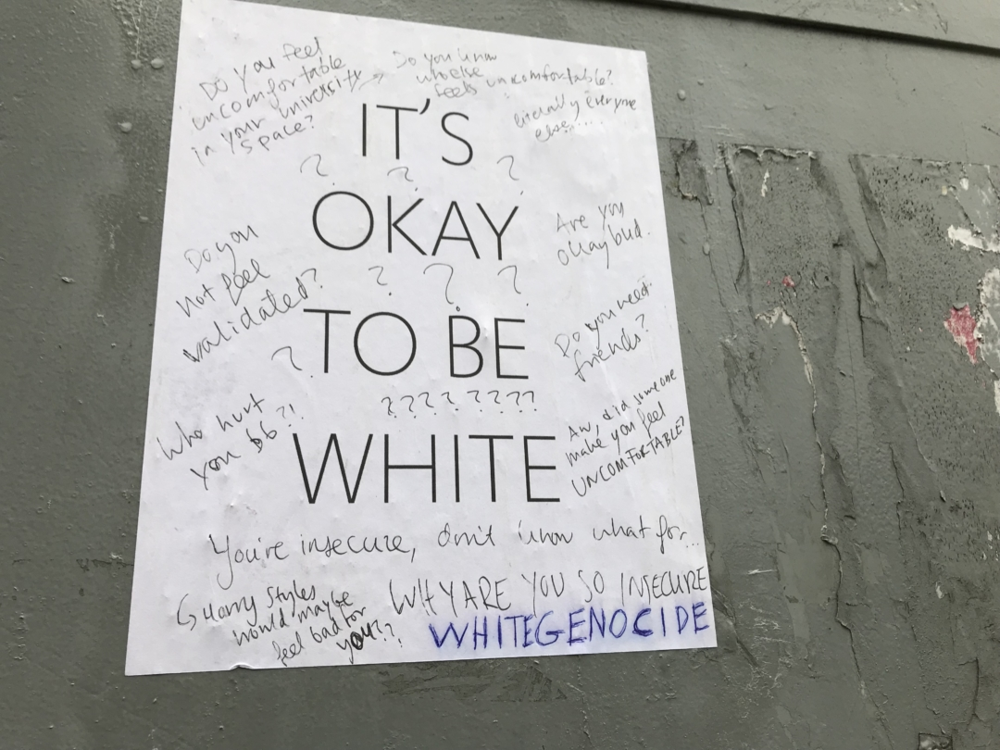
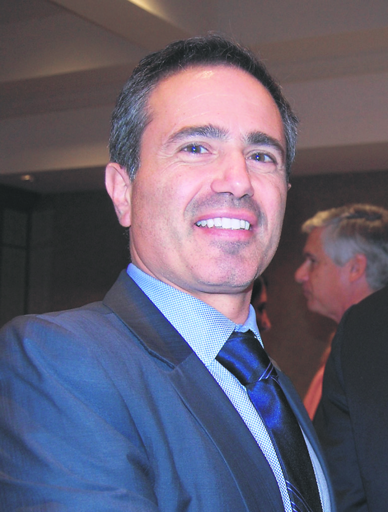
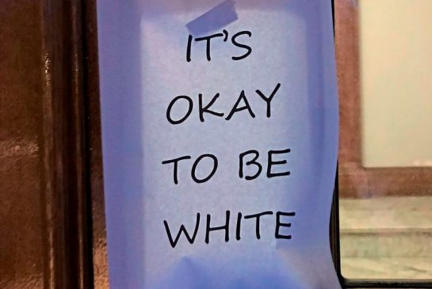

Friends of Simon Wiesenthal - It's Okay to Be White
February 20th, 2021
Friends of Simon Wiesenthal Centre:
TDC_ARTICLE_START
Toronto (November 3, 2017) - Friends of Simon Wiesenthal Center for Holocaust Studies (FSWC) is deeply concerned about reports of "Okay To Be White" posters on at least two Canadian university campuses placed over Halloween. In both cases, the posters were coordinated through online social forums.
TDC_ARTICLE_STOP
Deebly Goncerned Jews.
TDC_ARTICLE_START
Disturbingly, participants were encouraged to dress up in costumes to avoid detection at the University of Toronto, while at the University of Alberta those promoting this messaging hoped for a backlash. There are unconfirmed reports of the use of razor blades behind the posters to prevent their removal. The same poster has been reported in Saskatoon this week.
TDC_ARTICLE_STOP

"There are totally fake reports of razor blades to something something prevent removal." Fixed that for jew.
TDC_ARTICLE_START
"The coordinated effort being made through social media combined with the willingness to create division by promoting a message of intolerance is a most troubling development," said Avi Benlolo, President and CEO of FSWC. "We once again urge campus administrators and student bodies to speak out in condemnation against those who wish to poison the climate on campus and to work with enforcement personnel and police to ensure that those responsible are identified and disciplined."
TDC_ARTICLE_STOP
(((Avi Benlolo)))
"It's okay to be White," is apparently a message of intolerance. #SchlomoLogic.
TDC_ARTICLE_START
Through its advocacy initiatives and educational programs – such as Tour for Humanity, Freedom Day and the National Policy Conference on Holocaust Education – FSWC speaks out against all forms of hate and antisemitism, and it committed to promoting tolerance and acceptance in communities throughout Canada.
TDC_ARTICLE_STOP

"Simon Wiesenthal Centre exists to oppress the goyim and promote anti-Goyism, the hate filled ideology that jews have a right to oppress and enslave non-jews." Fixed that for jew.
I'm dealing with some Schlomo Fatigue goyim. Apologies if this isn't enough insight, I just wanted you to know what we're dealing with in the (((Friends of Simon Wiesenthal Centre))), if you didn't already know.